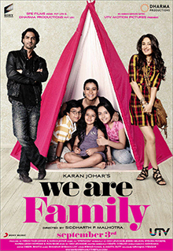
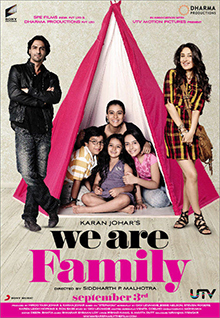

KAJOL
KAJOL
Kajol was born in Bombay (present-day Mumbai) on 5 August 1974. Her mother, Tanuja, is an actress, while her father Shomu Mukherjee was a film director and producer. Her younger sister, Tanishaa, is also an actress. Her maternal aunt was actress Nutan and her maternal grandmother, Shobhna Samarth, and great-grandmother, Rattan Bai, were both involved in Hindi cinema. Her paternal uncles, Joy Mukherjee and Deb Mukherjee, are film producers, while her paternal and maternal grandfathers, Sashadhar Mukherjee and Kumarsen Samarth, respectively, were filmmakers. Kajol's cousins Rani Mukerji, Sharbani Mukherjee,and Mohnish Bahl are also actors;whereas Ayan Mukerji is a director.
Kajol describes herself as being mischievous, stubborn, and impulsive at a young age.Her parents separated when she was young, but Kajol was unaffected by it since the matter was never discussed at home.Kajol was looked after by her maternal grandmother, who "never let me feel that my mother was away and working".According to Kajol, her mother inculcated a sense of independence in her since she was young. Growing up between two separate cultures, she inherited her "Maharashtrian pragmatism" from her mother and her "Bengali temperament" from her father.As part of tradition, along with the Mukherjee family, Kajol, a practising Hindu, celebrates the Durga Puja festival in the suburban neighbourhood of Santacruz annually.
Kajol was educated at St. Joseph's Convent School, Panchgani. Apart from her studies, she participated in extra-curricular activities, such as dancing.It was in school that she began to form an active interest in reading fiction, as it helped her "through the bad moments" in her life. In the early 1990s, Tanuja tried to direct a film to launch her as an actress, but it was shelved after a few days of shooting. At sixteen, Kajol began work on Bekhudi, which according to her was a "big dose of luck";she was cast by him when she visited the studio of the photographer Gautam Rajadhyaksha, who also wrote the film's screenplay.She intended to return to school after shooting during her two-months summer vacation but eventually dropped out to pursue a full-time career in film—though she later regretted the decision.
 

Kajol have worked in83 movies.Kajol has many movies, including romantic comedies, suspense thrillers, and other films:
Baazigar:
Kajol's first hit film in 1993, which also stars Shahrukh Khan.
Dushman:
A 1998 psychological thriller where Kajol plays twin sisters.
Ishq:
A popular movie where Kajol shares the screen with Juhi Chawla.
Pyaar To Hona Hi Tha:
A romantic comedy where Kajol's character Sanjana shows off her comic timing.
Pyaar Kiya To Darna Kya:
Written and directed by Sohail Khan, this movie also stars Salman Khan, Arbaaz Khan, and Dharmendra.
We Are Family:
A Bollywood remake of the 1998 film Stepmom, this domestic comedy follows a single parent family.
Salaam Venky:
Based on the true story of a young chess player with Duchenne muscular dystrophy, and Kajol plays his mother.
Hum Aapke Dil Mein Rehte Hain:
The only film where Kajol and Anil Kapoor star in the lead roles.